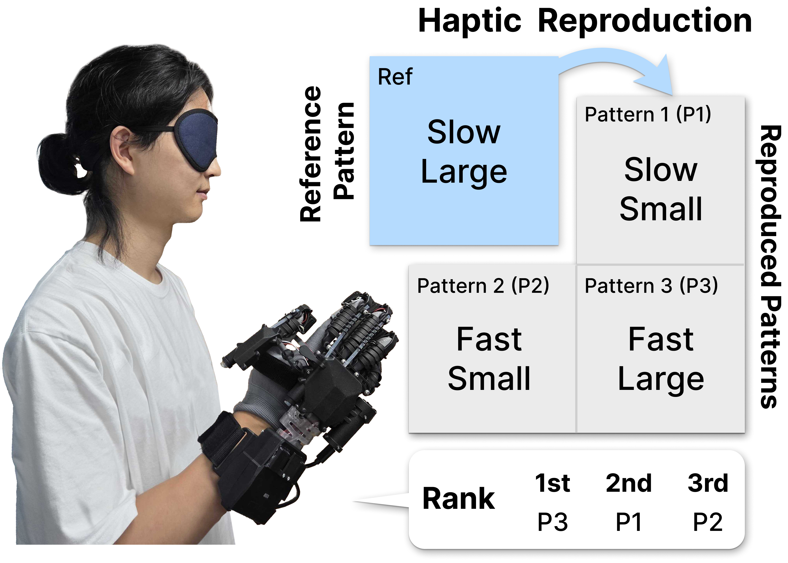
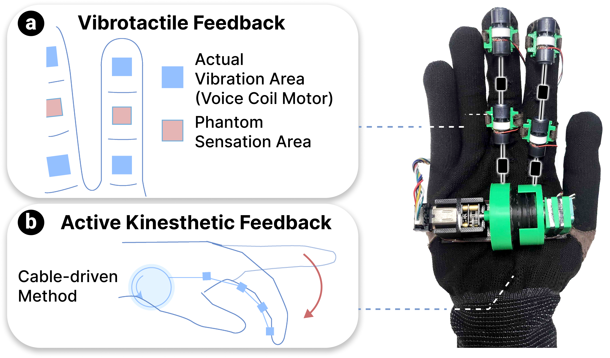
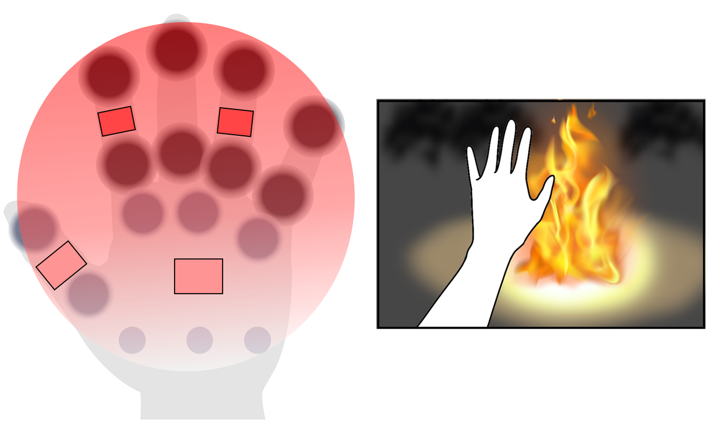
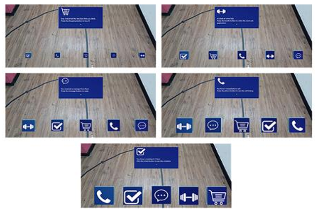
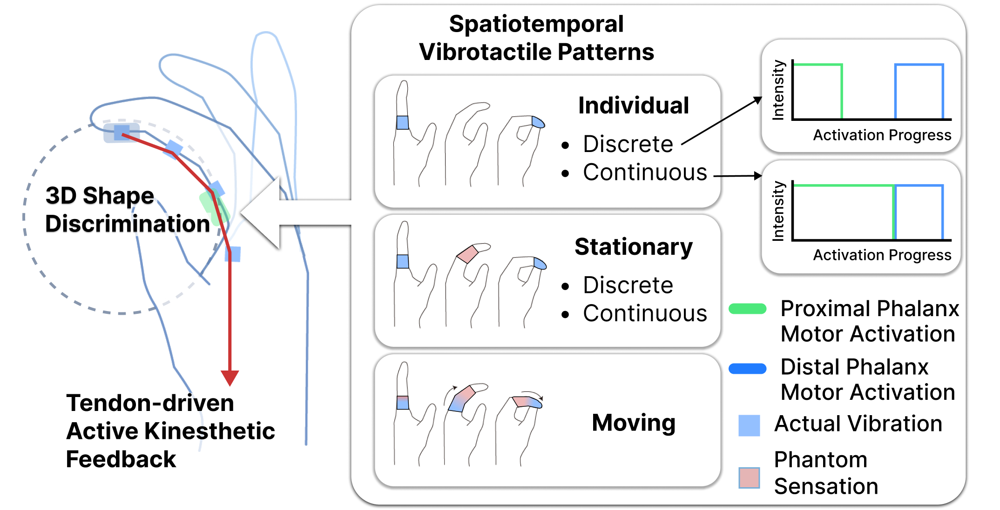
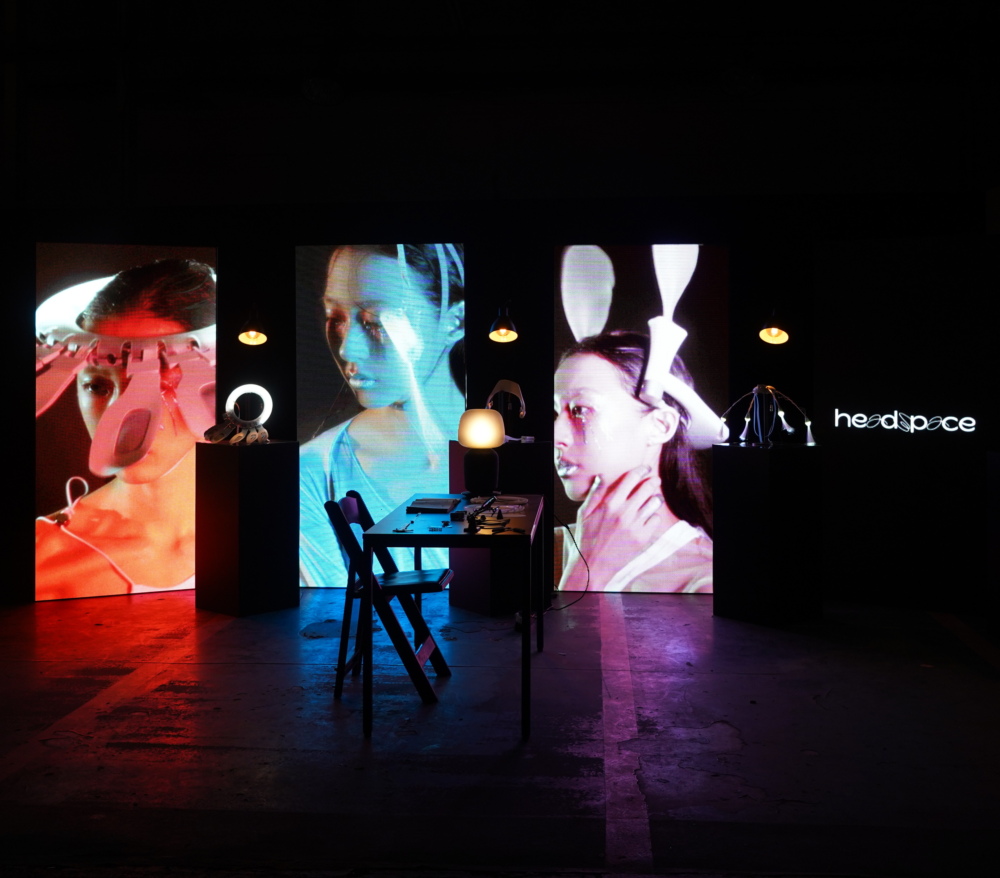

2025

Effect of Movement Velocity and Flexion Angle on Realistic Haptic Reproduction
Dongkyu Kwak*, Hojeong Lee*, Sang Ho Yoon (* Equal Contribution)
Research on identifying which kinesthetic parameter matters more for realistic reproduction : Movement Velocity or Flexion Angle.
IEEE International Symposium on Mixed and Augmented Reality (ISMAR) 2025 Adjunct

3D Shape Perception through Spatiotemporal Vibrotactile Patterns with Kinesthetic Feedback
Hojeong Lee, Eunho Kim, Sang Ho Yoon
A novel haptic shape rendering method synchronizing spatiotemporal vibrotactile feedback across multiple phalanges with low degrees of freedom kinesthetic feedback.
IEEE World Haptics Conference (WHC) 2025
2024

EStatiG: Wearable Haptic Feedback with Multi-Phalanx Electrostatic Brake for Enhanced Object Perception in VR
Nicha Vanichvoranun*, Hojeong Lee*, Seoyeon Kim, Sang Ho Yoon (* Equal contribution)
A haptic glove with the double layer and multi-stacked electrostatic clutches, forming an electrostatic brake for each phalanx.
Proc. ACM Interactive Mobile Wearable Ubiquitous Technology (IMWUT). 2024, 8, 1.

ThermicVib: Enabling Dynamic Thermal Sensation with Multimodal Haptic Glove for Thermal-Responsive Interaction
Hyungil Yi, Hojeong Lee, Sang Ho Yoon
A haptic glove that enhances the active perception of thermo-tactile interactions by integrating thermal referrals and vibrotactile phantom sensations.
IEEE International Symposium on Mixed and Augmented Reality (ISMAR) 2024

Optimizing Button Size to Enhance User Experience for Augmented Reality Interactions in Mobile Scenarios
Hojeong Lee, Yeahyoung Jeon, Keisuke Kudo, Paul Ssemakula, Seonghyeok Park, Shuping Xiong
This study investigates optimal button size that maximizes task performance accuracy while minimizing visual obstruction in AR user interfaces specifically for walking conditions.
22nd Triennial Congress of the International Ergonomics Association (IEA 2024)

Adaptive and Immersive XR Interactions with Wearable Interfaces (Demo of KAIST HCI Tech Lab)
Sang Ho Yoon, Youjin Sung, Kun Woo Song, Kyungeun Jung, Kyungjin Seo, Jina Kim, Hyung Il Yi, Nicha Vanichvoranun, Hanseok Jeong, Hojeong Lee
In this Interactivity, we present a lab demo on adaptive and immersive wearable interfaces that enhance extended reality (XR) interactions.
CHI EA '24: Extended Abstracts of the CHI Conference on Human Factors in Computing Systems
2021

headspace
Keunwook Kim (Participated as a Design Assistant)
Industrial design, Interaction design, Mechanical design, HCI research, Creative direction
Speculative Design Project funded by ZER01NE (Hyundai Motor Group), 2021